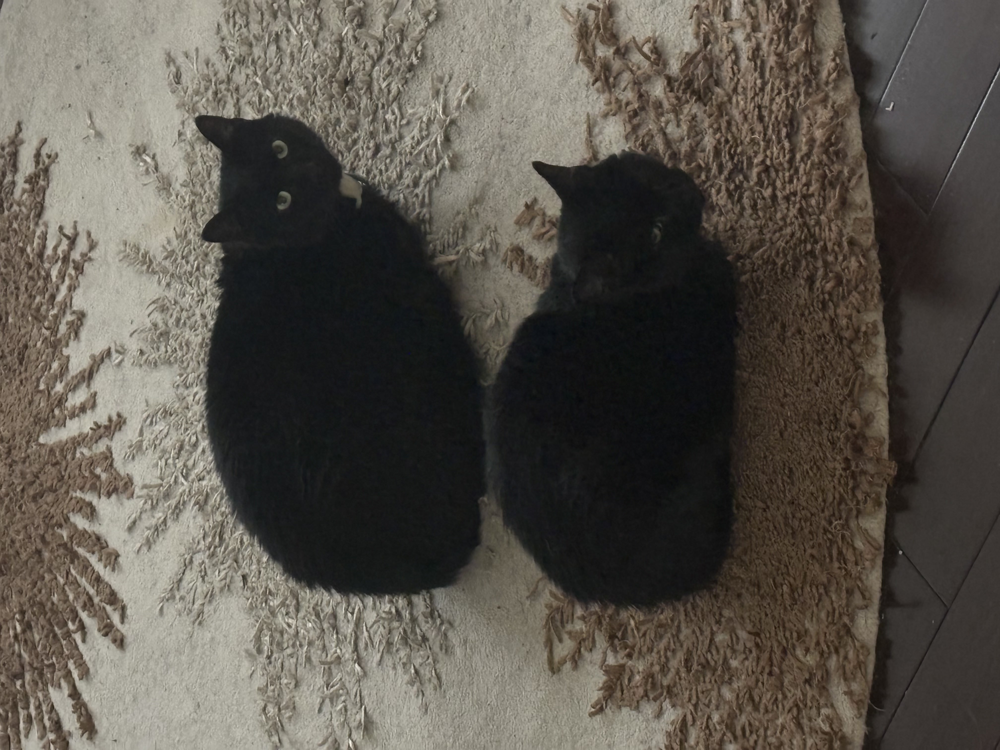
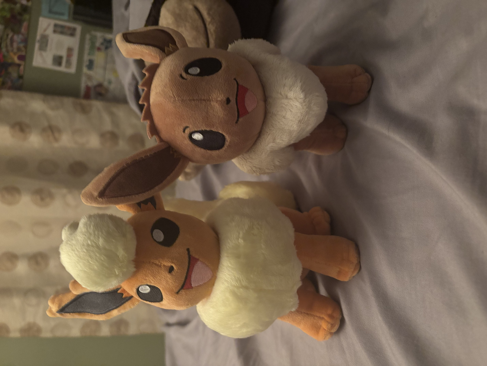
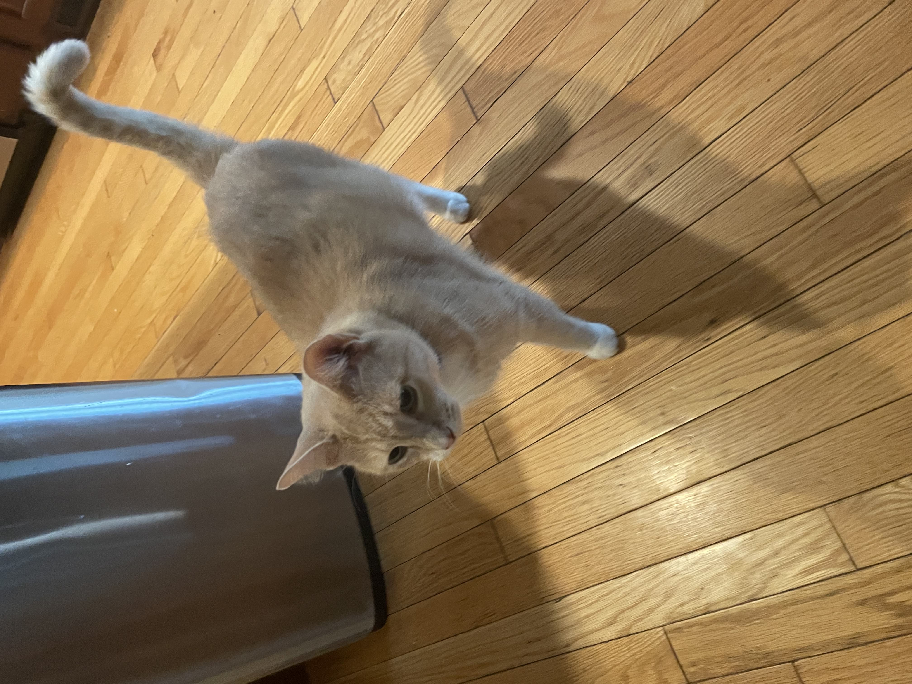
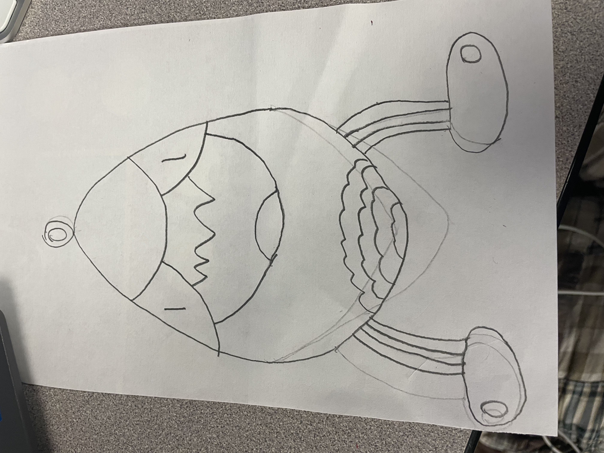

These two black cats are Midnight (top) and Batbat (bottom).
Midnight is shy and cautious and would like to stay away from anything scary looking, but he is nice once you get to know him.
Batbat on the other hand is sometimes friendly and likes to be pet, but most of the time she prefers to be left alone and will claw and bite at anyone who tries to pet her.
They both helped with the programing

These two hansome plushes of pokémon are Fred (the orange one on the left) and Derik (the brown one on the right)
They do almost everything together, from eating to sleeping. I rarely see them fight though when they do, it usualy lasts a week or so, but I can count all the times they did one hand.
they both are realy pasionate about composing music but since i didn't get the chance to put music in my websites, they haven't been doing a whole lot to help me make these pages.
they both have been a moral booster for everyone on the team.

This hansome young gentleman is named Quiver (I hope i spelt that right)
He is the most friendly of the three cats and loves to be pet as much as he likes to be fed. Quiver is quite glutonus and would often ask for food to the point of needing to take a shot daily.
He is full of ideas though and would help me think of ideas for what to add to these pages.

This weird looking egg is apperently called "Eggbart"
I have no idea who this guy is he just showed up at my door and asked to be a part of the team. He's very loud and chaotic, always shows up out of nowhere.
Couldn't get a picture of him as he is never around when i actualy need him so i made a drawing of him and took a picture of that.
Really good at art, glad he's on the team.